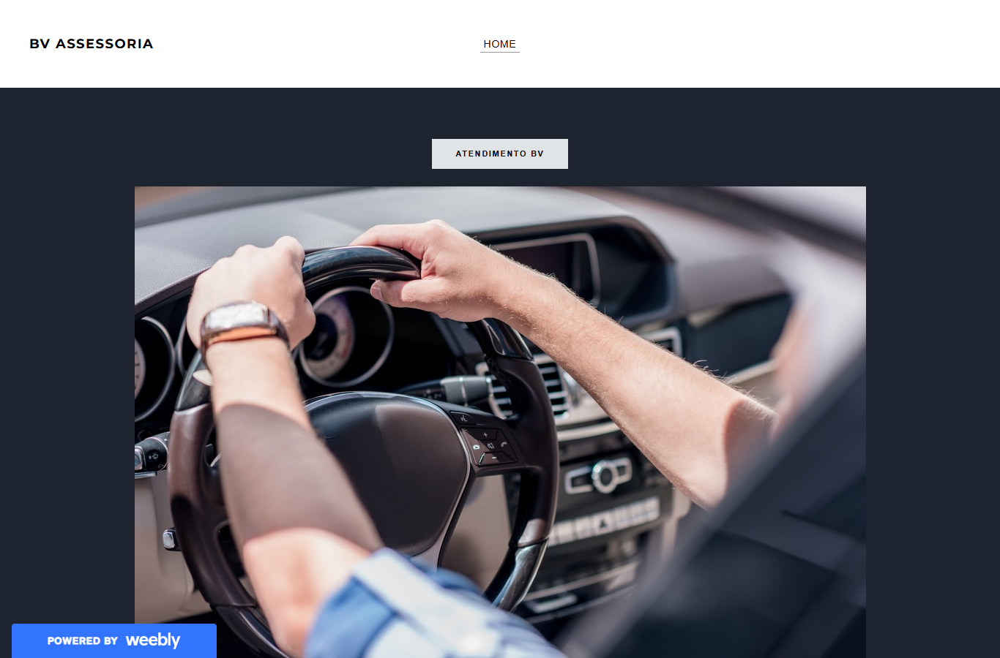
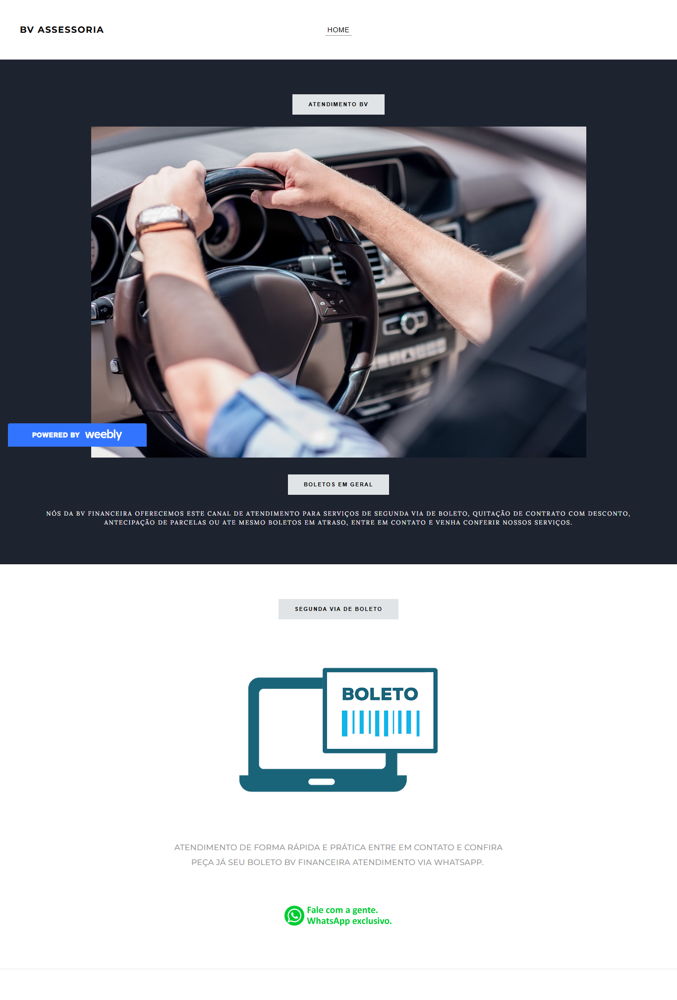

SIMIO · dossiê de candidato · campanha simio-20261119-174043-8bbc · gerado em 2026-11-19T21:22:03+00:00
https://xn--assessoriaboletosj-gsb.weebly.com/
STRONG_INDICATION Prioridade HIGH · Cenário D_STRONG_IMPERSONATION · Revisão humana: PENDING
Este dossiê apresenta indícios para apoio à auditoria. Não constitui conclusão regulatória. As conclusões automatizadas devem ser verificadas contra as evidências brutas abaixo (screenshots, catálogo e arquivos com hash). Conteúdo de terceiros é exibido como texto; links não são clicáveis por segurança.
A página examinada apresenta fortes indícios de impersonação da instituição (D_STRONG_IMPERSONATION). Hospedada em domínio gratuito de terceiro (weebly.com), intitula-se 'BV ASSESSORIA' / 'ATENDIMENTO BV' e afirma expressamente em primeira pessoa: 'NÓS DA BV FINANCEIRA OFERECEMOS ESTE CANAL DE ATENDIMENTO' [E-TXT-004]. Além disso, oferta serviços sensíveis típicos de canais oficiais de pós-venda (2ª via de boleto, quitação de contrato com desconto, antecipação de parcelas) direcionando o usuário para atendimento exclusivo via WhatsApp [E-CTA-1, E-CTA-3, E-TXT-007], sem exibir qualquer CNPJ, razão social ou identificação de empresa independente/correspondente [E-SHOT-FULL]. [Revisor: CONFIRM] As evidências visuais e textuais confirmam integralmente a hipótese do analista. A página, hospedada em plataforma gratuita de terceiros (weebly.com) [E-URL], apresenta-se como 'BV ASSESSORIA' e 'ATENDIMENTO BV' [E-TITLE, E-TXT-001, E-TXT-002] e declara explicitamente em primeira pessoa: 'NÓS DA BV FINANCEIRA OFERECEMOS ESTE CANAL DE ATENDIMENTO' [E-TXT-004, E-SHOT-FULL]. Oferta serviços críticos de pós-venda (segunda via de boleto, quitação de contrato, antecipação de parcelas) direcionando exclusivamente para contato via WhatsApp [E-CTA-1, E-CTA-3, E-TXT-007], sem qualquer CNPJ, razão social ou aviso de correspondente bancário.


| Ref | Tipo | Local | Conteúdo |
|---|---|---|---|
| E-URL | domain | url | URL final: https://xn--assessoriaboletosj-gsb.weebly.com/ (domínio: xn--assessoriaboletosj-gsb.weebly.com) |
| E-DISC-001 | text | search_index | Índice de busca (grounding): weebly.com — PEÇA JÁ SEU BOLETO BV FINANCEIRA ATENDIMENTO VIA WHATSAPP"* | **Risco:** Personificação direta da instituição financeira para captação de clientes via WhatsApp com foco em emissão de boletos e quitação de contratos |
| E-SHOT-VIEWPORT | screenshot | viewport | evidence\Ce81ab44ead\attempt-1\viewport.png (sha256 8a1d4cb54c6547f8…) |
| E-SHOT-FULL | screenshot | page | evidence\Ce81ab44ead\attempt-1\fullpage.png (sha256 99a4d24c1b3f487c…) |
| E-TITLE | title | head | BV ASSESSORIA - Home |
| E-META-1 | meta | head | og:site_name: BV ASSESSORIA |
| E-META-2 | meta | head | og:title: BV ASSESSORIA |
| E-META-3 | meta | head | og:description: ATENDIMENTO DE FORMA RÁPIDA E PRÁTICA ENTRE EM CONTATO E CONFIRA PEÇA JÁ SEU BOLETO BV FINANCEIRA ATENDIMENTO VIA WHATSAPP. |
| E-FOLD | text | viewport (acima da dobra) | BV ASSESSORIA Home ATENDIMENTO BV Powered by |
| E-CTA-1 | cta | page | ATENDIMENTO BV <https://wa.me/message/OCTAU7VW7XDSH1> |
| E-CTA-2 | cta | page | BOLETOS EM GERAL <https://wa.me/message/OCTAU7VW7XDSH1> |
| E-CTA-3 | cta | page | SEGUNDA VIA DE BOLETO <https://wa.me/message/OCTAU7VW7XDSH1> |
| E-CTA-4 | cta | page | Get Started |
| E-CONTACT-1 | contact | page | ATENDIMENTO BV <https://wa.me/message/OCTAU7VW7XDSH1> |
| E-CONTACT-2 | contact | page | BOLETOS EM GERAL <https://wa.me/message/OCTAU7VW7XDSH1> |
| E-CONTACT-3 | contact | page | SEGUNDA VIA DE BOLETO <https://wa.me/message/OCTAU7VW7XDSH1> |
| E-CONTACT-4 | contact | page | <https://wa.me/message/OCTAU7VW7XDSH1> |
| E-TXT-001 | text | page | BV ASSESSORIA |
| E-TXT-002 | text | page | ATENDIMENTO BV |
| E-TXT-003 | text | page | BOLETOS EM GERAL |
| E-TXT-004 | text | page | NÓS DA BV FINANCEIRA OFERECEMOS ESTE CANAL DE ATENDIMENTO PARA SERVIÇOS DE SEGUNDA VIA DE BOLETO, QUITAÇÃO DE CONTRATO COM DESCONTO, ANTECIPAÇÃO DE PARCELAS OU ATE MESMO BOLETOS EM ATRASO, ENTRE EM CONTATO E VENHA CONFERIR NOSSOS SERVIÇOS. |
| E-TXT-005 | text | page | SEGUNDA VIA DE BOLETO |
| E-TXT-006 | text | page | ATENDIMENTO DE FORMA RÁPIDA E PRÁTICA ENTRE EM CONTATO E CONFIRA |
| E-TXT-007 | text | page | PEÇA JÁ SEU BOLETO BV FINANCEIRA ATENDIMENTO VIA WHATSAPP. |
| Dimensão | Sinal | Achado | Refs |
|---|---|---|---|
| VISUAL_IDENTITY | NEUTRAL | Layout genérico construído na plataforma gratuita Weebly, com imagens genéricas (motorista ao volante e ícone de boleto), sem reprodução da paleta oficial ou tipografia proprietária do Banco BV. | E-SHOT-VIEWPORT E-SHOT-FULL |
| DECLARED_COMMERCIAL_IDENTITY | CONFUSION | A página adota o título 'BV ASSESSORIA' no topo e botões 'ATENDIMENTO BV', sem declarar nome empresarial, razão social ou CNPJ de estabelecimento terceiro. | E-TITLE E-META-1 E-TXT-001 E-TXT-002 E-SHOT-VIEWPORT |
| CORRESPONDENT_TRANSPARENCY | CONFUSION | Não há qualquer menção à atuação como correspondente no País (Resolução CMN nº 4.935/2021) ou esclarecimento de que se trata de empresa independente. | E-SHOT-FULL |
| INSTITUTIONAL_LANGUAGE | CONFUSION | Afirmação expressa em primeira pessoa assumindo a identidade da instituição financeira: 'NÓS DA BV FINANCEIRA OFERECEMOS ESTE CANAL DE ATENDIMENTO'. | E-TXT-004 E-SHOT-FULL |
| LOGO_USAGE | NEUTRAL | Não foi observado o uso do logotipo gráfico oficial do Banco BV na página, apenas o uso textual das marcas 'BV' e 'BV FINANCEIRA'. | E-SHOT-VIEWPORT E-SHOT-FULL |
| SERVICE_JOURNEY | CONFUSION | A jornada é inteiramente voltada para a captação de clientes buscando emissão de 2ª via de boleto, quitação de contrato com desconto e antecipação de parcelas via WhatsApp. | E-CTA-1 E-CTA-2 E-CTA-3 E-TXT-004 E-TXT-007 |
| CONTACT_CHANNELS | CONFUSION | Todos os botões de ação ('ATENDIMENTO BV', 'BOLETOS EM GERAL', 'SEGUNDA VIA DE BOLETO') direcionam para um mesmo link de WhatsApp externo (wa.me/message/OCTAU7VW7XDSH1), hospedado sob subdomínio gratuito na plataforma Weebly. | E-URL E-CONTACT-1 E-CONTACT-2 E-CONTACT-3 E-CONTACT-4 |
| CONSUMER_CONFUSION | CONFUSION | A combinação de autodeclaração como 'NÓS DA BV FINANCEIRA', oferta de emissão de boletos e ausência de identificação de terceiros gera forte risco de confusão para o consumidor. | E-TXT-001 E-TXT-004 E-TXT-007 E-SHOT-FULL |
A página examinada apresenta fortes indícios de impersonação da instituição (D_STRONG_IMPERSONATION). Hospedada em domínio gratuito de terceiro (weebly.com), intitula-se 'BV ASSESSORIA' / 'ATENDIMENTO BV' e afirma expressamente em primeira pessoa: 'NÓS DA BV FINANCEIRA OFERECEMOS ESTE CANAL DE ATENDIMENTO' [E-TXT-004]. Além disso, oferta serviços sensíveis típicos de canais oficiais de pós-venda (2ª via de boleto, quitação de contrato com desconto, antecipação de parcelas) direcionando o usuário para atendimento exclusivo via WhatsApp [E-CTA-1, E-CTA-3, E-TXT-007], sem exibir qualquer CNPJ, razão social ou identificação de empresa independente/correspondente [E-SHOT-FULL].
Nenhum CNPJ ou razão social identificáveis no conteúdo coletado.
| Tipo | Valor | Ref | Contexto |
|---|---|---|---|
| domain | weebly.com | E-URL | |
| trade_name | BV ASSESSORIA | E-META-2 | |
| Índice de busca (grounding): weebly.com — PEÇA JÁ SEU BOLETO BV FINANCEIRA ATENDIMENTO VIA WHATSAPP"* | **Risco:** Personificação direta da instituição financeira para captação de clientes via WhatsAp | E-DISC-001 | ||
| ATENDIMENTO BV <https://wa.me/message/OCTAU7VW7XDSH1> | E-CONTACT-1 | ||
| BOLETOS EM GERAL <https://wa.me/message/OCTAU7VW7XDSH1> | E-CONTACT-2 | ||
| SEGUNDA VIA DE BOLETO <https://wa.me/message/OCTAU7VW7XDSH1> | E-CONTACT-3 | ||
| <https://wa.me/message/OCTAU7VW7XDSH1> | E-CONTACT-4 |
Mapeamento indicativo para apoio à auditoria. Não constitui conclusão regulatória; a decisão definitiva pertence à auditoria.
Fonte: NORMATIVE
Art. 14. O contrato de correspondente deve estabelecer: [...] II - vedação à utilização, pelo contratado, de logomarca ou de outros atributos que sejam similares aos adotados pela instituição contratante em suas agências, postos de atendimento, sítio eletrônico na internet, aplicativo ou outras plataformas de comunicação em rede;
Evidência observada: —
Fonte: NORMATIVE
Art. 14. O contrato de correspondente deve estabelecer: [...] III - divulgação ao público, pelo contratado, de sua condição de prestador de serviços à instituição contratante, identificada pelo nome com que é conhecida no mercado, com descrição dos produtos e serviços oferecidos e canais de contato da instituição contratante, inclusive de sua ouvidoria, em local visível, em destaque e em formato legível, por meio de: a) sítio eletrônico do correspondente na internet, acessível na página inicial; b) aplicativo e outras plataformas de comunicação em rede do correspondente; [...]
Hipótese: Divulgação ao público da condição de prestador de serviços à contratante ausente, insuficiente ou sem destaque. A norma disciplina correspondentes contratados; o responsável não foi identificado como correspondente.
Evidência observada: E-CONTACT-1 E-CONTACT-2 E-CONTACT-3 E-CONTACT-4 E-META-1 E-SHOT-FULL E-SHOT-VIEWPORT E-TITLE E-TXT-001 E-TXT-002 E-TXT-004 E-TXT-007 E-URL
Informação faltante:
Fonte: NORMATIVE
Art. 3º O correspondente atua por conta e sob as diretrizes da instituição contratante, que assume inteira responsabilidade pelo atendimento prestado aos clientes e usuários por meio do contratado.
Hipótese: Atendimento ao público prestado por meio do contratado em condições que podem não seguir as diretrizes da contratante. A norma disciplina correspondentes contratados; o responsável não foi identificado como correspondente.
Evidência observada: E-CONTACT-1 E-CONTACT-2 E-CONTACT-3 E-CONTACT-4 E-CTA-1 E-CTA-2 E-CTA-3 E-SHOT-FULL E-TXT-004 E-TXT-007 E-URL
Informação faltante:
Se o responsável não for correspondente contratado, os indícios podem caracterizar uso indevido de marca ou fraude, fora do escopo da Res. 4.935: avaliar encaminhamento às áreas jurídica/segurança.
Limitações: requisitos contratuais/internos não fornecidos: mapeamento limitado ao texto normativo
Decisão: CONFIRM → STRONG_INDICATION / HIGH
As evidências visuais e textuais confirmam integralmente a hipótese do analista. A página, hospedada em plataforma gratuita de terceiros (weebly.com) [E-URL], apresenta-se como 'BV ASSESSORIA' e 'ATENDIMENTO BV' [E-TITLE, E-TXT-001, E-TXT-002] e declara explicitamente em primeira pessoa: 'NÓS DA BV FINANCEIRA OFERECEMOS ESTE CANAL DE ATENDIMENTO' [E-TXT-004, E-SHOT-FULL]. Oferta serviços críticos de pós-venda (segunda via de boleto, quitação de contrato, antecipação de parcelas) direcionando exclusivamente para contato via WhatsApp [E-CTA-1, E-CTA-3, E-TXT-007], sem qualquer CNPJ, razão social ou aviso de correspondente bancário.
| Tema | Severidade | Questionamento | Refs |
|---|---|---|---|
| domain_attribution | NONE | Não há CNPJ ou razão social na página para atribuir a autoria a uma empresa específica, porém a própria ausência de identificação em conjunto com a autodeclaração em primeira pessoa reforça a suspeita de uso indevido. | E-URL E-SHOT-FULL E-TXT-004 |
| Fonte | Consulta / hipótese | URL original | Título / trecho |
|---|---|---|---|
| grounding | sites de empresas independentes, promotoras ou lojas no Brasil que usam a marca Banco BV (ou bv financeira) no título da página, no domínio/URL ou como identidade principal do próprio site, aparentando ser um canal do Banco BV ou omitindo a empresa responsável H1-identity | https://xn--assessoriaboletosj-gsb.weebly.com/ | weebly.com PEÇA JÁ SEU BOLETO BV FINANCEIRA ATENDIMENTO VIA WHATSAPP"* | **Risco:** Personificação direta da instituição financeira para captação de clientes via WhatsApp com foco em emissão de boletos e quitação de contratos |
Original: https://xn--assessoriaboletosj-gsb.weebly.com/
Final: https://xn--assessoriaboletosj-gsb.weebly.com/
| Artefato | Caminho | SHA-256 | Bytes |
|---|---|---|---|
| screenshot_viewport | evidence\Ce81ab44ead\attempt-1\viewport.png | 8a1d4cb54c6547f8c5ea60471044bb6c2edb3ea3144843b7761dc53e759cc2fe | 645765 |
| screenshot_full | evidence\Ce81ab44ead\attempt-1\fullpage.png | 99a4d24c1b3f487c8ec57507e7dd1552b870ceb8d251fbec9d02146094865ce9 | 713993 |
| html | evidence\Ce81ab44ead\attempt-1\page.html.txt | 3076e0c76849340f40c0518bf8355229e6b908da112015799d9d743d1f5f0a8e | 40526 |
| text | evidence\Ce81ab44ead\attempt-1\text.txt | 106b7286657737155e7e3a6925b66567896c0789a525ac1ff82a30fe117c9738 | 542 |
| page_data | evidence\Ce81ab44ead\attempt-1\page.json | bb28ffb181ab9fc52e46b54d86eb8cf42c54ea36f141bfe1239de6e479d573bb | 4282 |
| Quando | De | Para | Nota |
|---|---|---|---|
| 2026-11-19T18:10:10+00:00 | DISCOVERED | QUEUED | prioritised (score 6.5) |
| 2026-11-19T18:10:48+00:00 | QUEUED | COLLECTING | |
| 2026-11-19T18:10:58+00:00 | COLLECTING | COLLECTED | |
| 2026-11-19T18:10:58+00:00 | COLLECTED | ANALYZING | |
| 2026-11-19T18:11:40+00:00 | ANALYZING | REVIEWING | |
| 2026-11-19T18:11:56+00:00 | REVIEWING | COMPLETED |